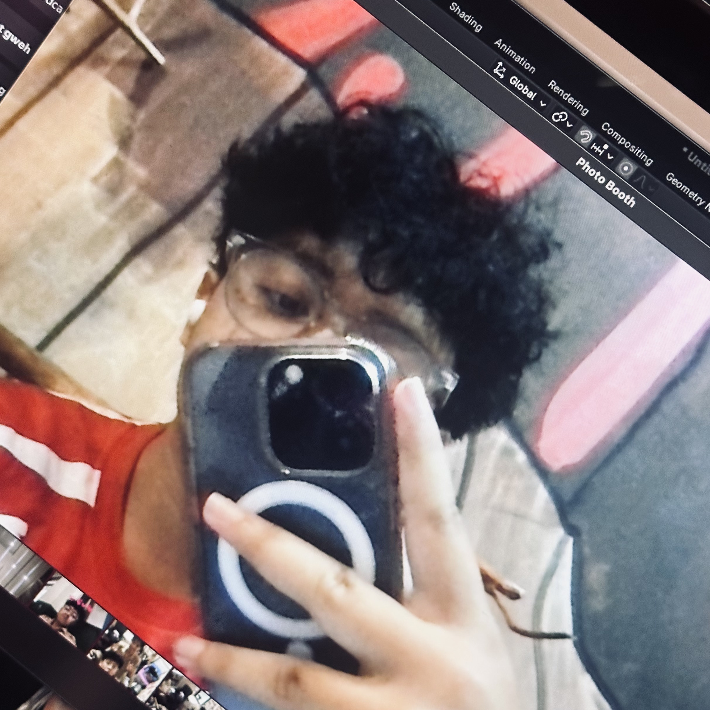
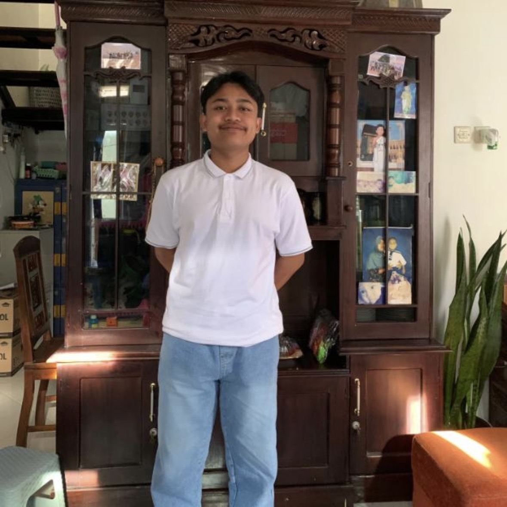

Menjelajahi warisan cagar budaya candi-candi bersejarah di Malang Raya melalui arsip digital dan pengalaman virtual tour yang imersif.
Keberadaan situs warisan cagar budaya di Indonesia tengah menghadapi tantangan besar akibat kerusakan material, kemajuan zaman, dan kurangnya dokumentasi. MALACANDI hadir sebagai solusi inovatif berupa website virtual tour 360° yang mengintegrasikan teknologi kamera imersif sebagai media arsip digital permanen untuk candi-candi bersejarah di wilayah Malang Raya.
Dari peninggalan Mataram Kuno hingga Kerajaan Singhasari dan Majapahit, enam situs yang menjadi fokus dokumentasi virtual MALACANDI.
Jelajahi setiap sudut dan relief candi secara imersif menggunakan teknologi foto 360° kapan saja, di mana saja, tanpa batas.
Penelitian ini dilaksanakan oleh tiga siswa peneliti dari Madrasah Aliyah Negeri Batu, Kota Batu, Jawa Timur.

